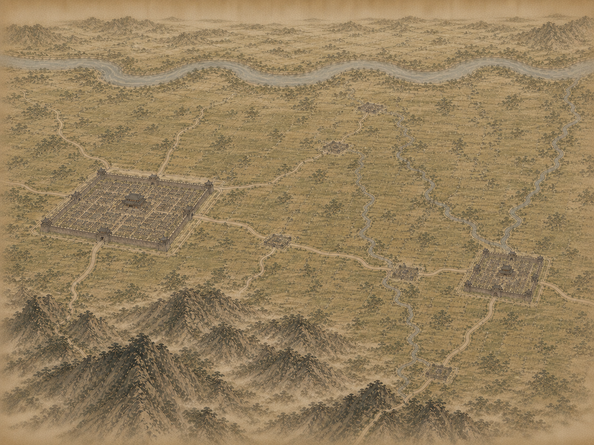

T06_CC_W v3 Overlay Review
Concept crop: 334,251,586,439. Output source: 1448 x 1086. Blue bands mark neighbor overlap zones: 168/586 horizontal and 126/439 vertical in concept space.

N overlap
T02_NC_W
T02_NC_W
S overlap
T10_SC_W
T10_SC_W
W overlap
T05_WC
T05_WC
E overlap
T07_CC_E
T07_CC_E
Scope: city hierarchy instead of two-city-only representative crop.
Terrain: dry bounded plains, upper main river, southern foothills.
Review risk: right/eastern north-south local river remains prominent.
Runtime: docs-only, no assets/maps promotion.